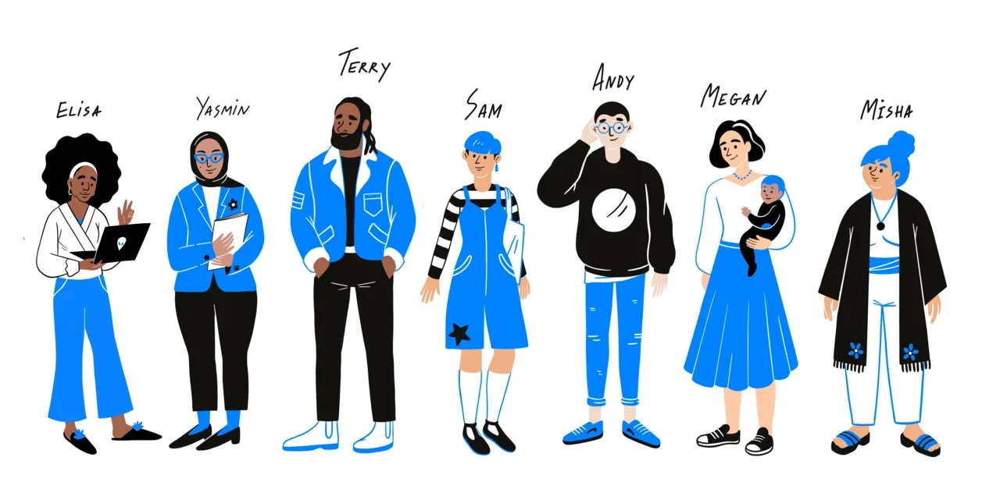

About me
Growing up in Boston I had a very rish childhood and life in general. I tried my hand at many different areas in life:
- Gardening
- Calligraphy & Embroidery
- Running a Tik-tok blog
- DJ
- etc.
I have always had an adventourus spirit, so just joining parties was just not enought, hence, I became a DJ for a while, maybe not the best, but succesful nontheless.
After a while I somewhat calmed down started speding more time alone in my garden, listening to podcasts or reading books and I wanted a more stable life, income, so I learned and started to work as a freelance UX designer, which is what I still do today, but I really want to became a programmer. After many attempts I never actually managed to get a feel for it, but that is, until I met Elise, the programming guru, who introduced me to Practicum and now I'm fast on my way to cach up to her and became a programmer. And, with my natural luck, hopefully I quickly will be.
My unique skills
-
G.O.A.T
The best goat careteker in the world. My goat even has his own tik-tok blog.
-
A good heart
I care about people and animals alike, volunteering regularly at an animal shelter and making my nieces happy watching their favourite show together with them.
-
Creative
Having been a DJ and having hobbies like gardening and calligraphy & embroidery has helped me develop my creativity.
-
Diversity
Beind interested in many things not only gave me many skills but also gave me the opportunity to meet and work with many different poeple.
-
Luck
Being lucky is skill and a blessing and I'm certainly enjoying it.
Projects
Gardener's Forum
The influence that the Agriculture community has is remarkable and remains to be one of the most influential shows to date. We created a social media like application for all the known lovers as well as those filled with curiosity as to what it entails to grow all the food and beauty our world has to offer.
Customize your own Avatar
This application that we have created gives the user the ability to go ahead and customize a character to their liking. It allows the imagination to run wild with fun and responsive accessoires like changing hair color and picking out an outfit for your customizable avatar.
Books and Coffee
With this application, we created an app like struture for the "coffee shop" known as "Books and Coffee". It is a cafe that allows you to sit and read to enjoy the simple things in the day while sipping your favorite beverages. This application includes a menu to select and purchase drinks; as well as searching and browsing through our online library to see what we have in store!